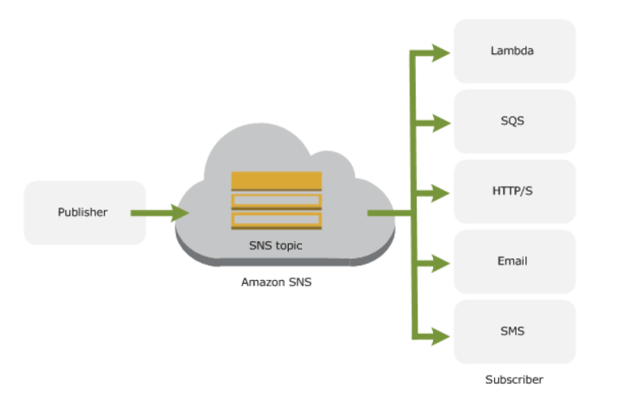

AWS Simple Notification Service - SNS¶
{kind=link}
- Simple Notification Service – SNS is a web service that coordinates and manages the delivery or sending of messages to subscribing endpoints or clients
- SNS provides the ability to create Topic which is a logical access point and communication channel.
- Each topic has a unique name that identifies the SNS endpoint for publishers to post messages and subscribers to register for notifications.
- Producers and Consumers communicate asynchronously with subscribers by producing and sending a message to a topic
- Producers push messages to the topic, they created or have access to, and SNS matches the topic to a list of subscribers who have subscribed to that topic, and delivers the message to each of those subscribers
- Subscribers receive all messages published to the topics to which they subscribe, and all subscribers to a topic receive the same messages.
- Subscribers (i.e., web servers, email addresses, SQS queues, AWS Lambda functions) consume or receive the message or notification over one of the supported protocols (i.e., SQS, HTTP/S, email, SMS, Lambda) when they are subscribed to the topic.
Accessing Amazon SNS¶
Amazon Management console
- Amazon Management console is the web-based user interface which can be used to manage SNS
AWS Command line Interface (CLI)
- Provides commands for a broad set of AWS products, and is supported on Windows, Mac, and Linux.
AWS Tools for Windows Powershell
- Provides commands for a broad set of AWS products for those who script in the PowerShell environment
AWS SNS Query API
- Query API allows for requests are HTTP or HTTPS requests that use the HTTP verbs GET or POST and a Query parameter named Action
AWS SDK libraries
- AWS provide libraries in various languages which provide basic functions that automate tasks such as cryptographically signing your requests, retrying requests, and handling error responses
SNS Supported Transport Protocols¶
- HTTP, HTTPS – Subscribers specify a URL as part of the subscription registration; notifications will be delivered through an HTTP POST to the specified URL.
- Email, Email-JSON – Messages are sent to registered addresses as email. Email-JSON sends notifications as a JSON object, while Email sends text-based email.
- SQS – Users can specify an SQS queue as the endpoint; SNS will enqueue a notification message to the specified queue (which subscribers can then process using SQS APIs such as ReceiveMessage, DeleteMessage, etc.)
- SMS – Messages are sent to registered phone numbers as SMS text messages
SNS Supported Endpoints¶
Email Notifications
- SNS provides the ability to send Email notifications
Mobile Push Notifications
SNS provides an ability to send push notification messages directly to apps on mobile devices. Push notification messages sent to a mobile endpoint can appear in the mobile app as message alerts, badge updates, or even sound alerts
Supported push notification services
- Amazon Device Messaging (ADM)
- Apple Push Notification Service (APNS)
- Google Cloud Messaging (GCM)
- Windows Push Notification Service (WNS) for Windows 8+ and Windows Phone 8.1+
- Microsoft Push Notification Service (MPNS) for Windows Phone 7+
- Baidu Cloud Push for Android devices in China
SQS Queues
- SNS with SQS provides the ability for messages to be delivered to applications that require immediate notification of an event, and also persist in an SQS queue for other applications to process at a later time
- SNS allows applications to send time-critical messages to multiple subscribers through a “push” mechanism, eliminating the need to periodically check or “poll” for updates.
- SQS can be used by distributed applications to exchange messages through a polling model, and can be used to decouple sending and receiving components, without requiring each component to be concurrently available.
SMS Notifications
- SNS provides the ability to send and receive Short Message Service (SMS) notifications to SMS-enabled mobile phones and smart phones
HTTP/HTTPS Endpoints
- SNS provides the ability to send notification messages to one or more HTTP or HTTPS endpoints.When you subscribe an endpoint to a topic, you can publish a notification to the topic and Amazon SNS sends an HTTP POST request delivering the contents of the notification to the subscribed endpoint
Lambda
- SNS and Lambda are integrated so Lambda functions can be invoked with SNS notifications.
- When a message is published to an SNS topic that has a Lambda function subscribed to it, the Lambda function is invoked with the payload of the published message